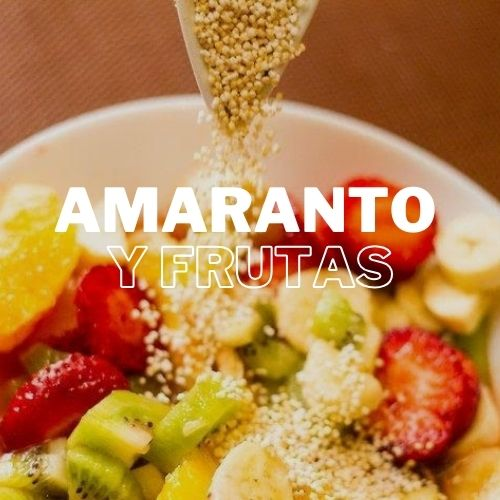

Ingredientes
- 1/2 taza de amaranto inflado
- 1/2 taza de yogur natural o de coco
- 1/4 taza de fresas frescas picadas
- 1/4 taza de arándanos
- 1 plátano en rodajas
- 1 cucharada de miel o jarabe de agave (opcional)
- Hojas de menta para decorar (opcional)
Instrucciones
- En un tazón grande, coloca el amaranto inflado.
- Añade el yogur sobre el amaranto y mezcla ligeramente.
- Coloca las fresas, los arándanos y las rodajas de plátano sobre la mezcla.
- Rocía con miel o jarabe de agave si deseas un toque más dulce.
- Decora con hojas de menta y sirve inmediatamente.
Información Nutricional
| Calorías | 280 kcal |
|---|---|
| Proteínas | 8g |
| Grasas | 4g |
| Carbohidratos | 52g |
| Fibra | 6g |
| Azúcares | 20g |
| Calcio | 100 mg |
| Hierro | 3 mg |
| Vitamina C | 15 mg |